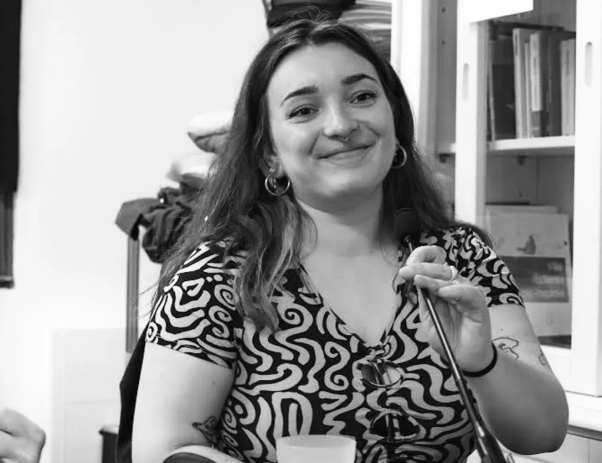
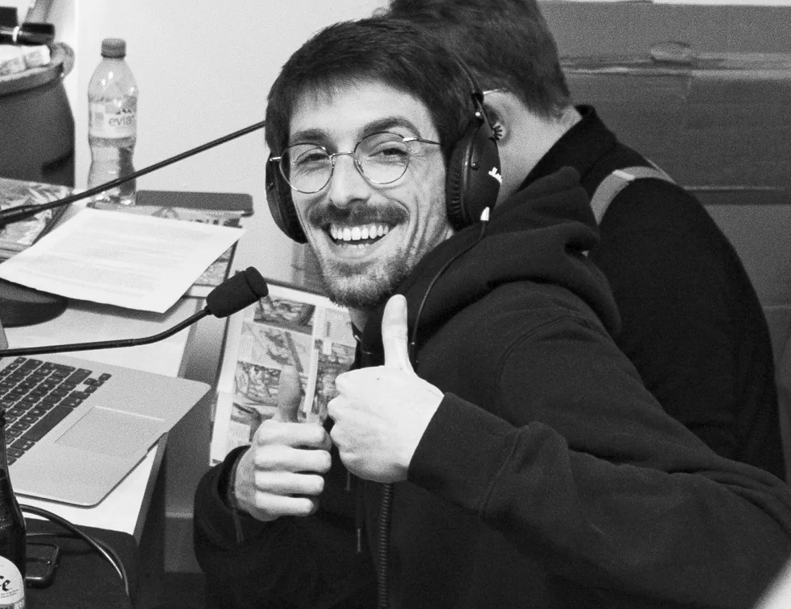
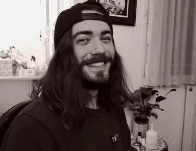

NOTRE HISTOIRE
À propos
UN PROJET ASSOCIATIF ET MILITANT
LaCab studio, c’est la réunion de trois ami.e.s autour d’un seul et même projet associatif : aider de jeunes créateur.ices à développer leurs projets artistiques et l’organisation d’ateliers de médiation culturelle visant à faire découvrir des pratiques artistiques méconnues.
3
Podcast produit
79
Épisodes enregistrés
51
Heures de contenu audio
Nos engagements
LaCab studio c’est une association engagée et militante. Nous privilégions l’utilisation de logiciels libres de droit et open source. Nos enregistrements, de même que le mixage et le montage de nos podcasts, sont réalisés sur le logiciel Reaper.
Nous œuvrons à réduire notre impact environnemental. Pour ce faire, nous minimisons nos échanges dématérialisés, notre site Internet a été conçu par un web designer formé à l’éco-conception et notre compte bancaire a été ouvert au sein d’un établissement favorisant les investissements dans l’économie solidaire et sociale.
L’association s’engage par ailleurs dans diverses actions de promotion de la culture auprès de publics qui en sont éloignés contre leur gré.
Les podcasts, livres audio et spectacles vivants que nous produisons s’inscrivent également dans cette démarche générale et visent à promouvoir les valeurs que nous défendons.
juillet 2025
Fondation de la compagnie Razzmattazz et lancement de la création de Les Aventures de Gudule et Léon – la compagnie du kaléidoscope, un concert dessiné narratif à destination du jeune public, premier spectacle vivant de la compagnie.
Janvier - Mai 2025
Bulletins météo de Paul Langevin : Animation d’ateliers de découverte du bruitage et enregistrements de bulletins météo en milieu scolaire dans le cadre d’un cycle éducatif sur le climat. Exposition de fin d’année au sein du groupe scolaire Paul Langevin.
Janvier - Mai 2024
Vis ton livre : Animation d’ateliers de découverte du bruitage et enregistrement de livres audio en milieu scolaire en partenariat avec l’Association des amis de la librairie Points Communs, dans le cadre du Prix Lire. Exposition au sein de la médiathèque Elsa Triolet lors du Salon du livre jeunesse de Villejuif 2024.
janvier 2023
Naissance de l’association LaCab studio dans le but d’aider les créateur.ices en devenir à s’emparer du médium audio. Avec un coup de pouce, c’est à la portée de tous !
OCTOBRE 2022
Des discussions avec nos familles, amis, proches et autres connaissances nous font prendre conscience du nombre sans cesse grandissant de personnes désireuses de se lancer dans l’expérience audio. Le médium est riche et les approches potentielles si variées… Mais leur élan créatif est bien souvent brimé par des contraintes d’ordre technique, logistique, ou même d’écriture.
« Ces projets avortés, nous voulons les écouter. Tous ! »
SEPTEMBRE 2022
L’œil du libraire s’est achevé, place au podcast “Le 48/64 – le podcast référence en BD”, d’abord sur ActuaBD, puis en indépendant. Le podcast s’achève en octobre 2024. Après deux saisons de chroniques, débats enflammés, reportages et interviews, l’équipe conclut l’aventure avec un double épisode de Jeu de Rôle inspiré de l’univers du podcast. Un premier pas vers la fiction...
MAI 2021
Lancement du podcast culturel centré sur la bande dessinée « L’œil du libraire » pour le compte du web média ActuaBD.
Janvier 2021
Constat : nous écoutons tous des podcasts et productions audio depuis l’enfance (génération Donjon de Naheulbeuk oblige !). Ce serait quand même chouette d’en faire nous aussi et les idées ne manquent pas !
Notre Équipe
LaCab studio, c’est la réunion de trois ami.e.s autour d’un projet commun alliant soutien à la jeune création, médiation culturelle et promotion d’imaginaires enviables.

manon Dias santos
Bruiteuse spécialisée en objets du quotidien + voix de la raison. Elle vous aidera à synthétiser vos idées et à les transformer en véritables projets diffusables. Évaluation de faisabilité, cohérence éditoriale et charte graphique, elle aura toujours un bon conseil à vous prodiguer.

Thomas figuères
Adore parler trop près du micro et se faire tirer les oreilles par Léo. Quand il n’est pas derrière en studio, il vous aide à adapter votre écriture au format audio. Il officie également en tant qu’animateur d’ateliers et écrit des scénarios nébuleux à ses heures perdues.

léo jacquet
Un problème technique ? Besoin de conseils ? de monter le dernier épisode de votre production ? d’un mixage aux petits oignons ? Ou même de créer vos propres jingles et créations vidéos ? C’est L’ingé-son de la situation.
Nous contacter
Tu as un projet audio en tête ? Un mail à lacabstudio@protonmail.com suffit, on te répond sous 48h.